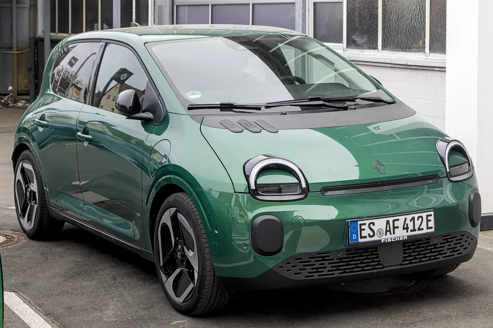

▲ 르노 트윙고 E-Tech. 개구리눈을 닮은 원형 헤드램프가 특징인 소형 전기차다 ⓒ Alexander Migl, Wikimedia Commons (CC BY-SA 4.0)
미국 자동차 매체 카스쿠프스(Carscoops)에 따르면 르노가 트윙고 E-Tech 100대를 영국 딜러 전시장에 배치하기 위해 선적했다. 이 차량들은 좌핸들 사양으로 영국 도로 인증을 아직 받지 못해 실제 시승이 불가능하다. 즉 '전시만을 위한 100대'인 셈이다. 정식 판매는 2026년 하반기부터 시작될 예정이며, 영국 판매가는 2만 파운드 미만으로 책정될 전망이다.
1. 왜 팔지도 못할 차를 미리 보냈나
이례적으로 보이는 이번 조치는 사실 신차 출시를 앞둔 흔한 마케팅 전략의 변형이다. 정식 인증과 시승 준비까지는 시간이 걸리지만, 소비자들이 매장에서 실물을 직접 보고 만져볼 수 있게 하면 사전 관심과 대기 수요를 미리 만들어낼 수 있다는 계산이다. 특히 트윙고 E-Tech처럼 복고풍 디자인이 화제성을 가진 모델일수록, 실물 노출이 빠를수록 입소문 효과가 크다는 판단이 깔려 있다.
2. 2만 파운드 미만 — 저가 전기차 시장을 노린다

▲ 트윙고 E-Tech 우측 전면. 소형 도시형 전기차로 세컨드카 수요를 겨냥한다 ⓒ Alexander Migl, Wikimedia Commons (CC BY-SA 4.0)
트윙고 E-Tech는 80마력 전기모터로 163마일(약 262km) 주행이 가능한 소형 전기차로, 프랑스에서는 1만 9,490유로부터 시작하는 저가형 모델로 포지셔닝돼 있다. 영국에서도 2만 파운드 미만이라는 가격대를 예고하며, 갈수록 비싸지는 전기차 시장에서 진입 장벽을 낮추는 역할을 노리고 있다. 도심 주행 위주의 세컨드카 수요를 겨냥한 전략으로 풀이된다.
최근 유럽 전기차 시장은 대형 배터리·긴 주행거리를 앞세운 프리미엄 모델 중심으로 가격대가 계속 올라가는 추세였다. 트윙고 E-Tech는 이런 흐름에 역행해 짧은 주행거리를 감수하더라도 진입 가격을 낮추는 전략을 택했는데, 이는 유럽 완성차 업체들이 저가 중국산 전기차의 공세에 대응하기 위해 잇따라 소형 저가 전기차를 내놓는 흐름과도 맞닿아 있다.